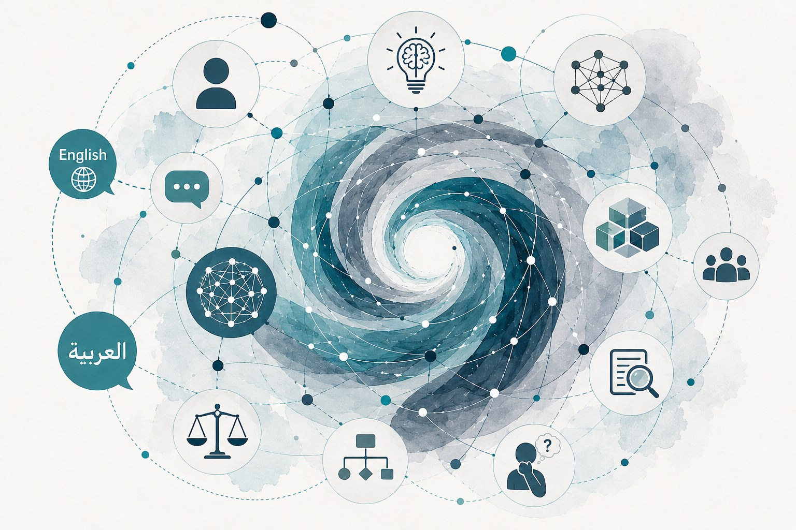

Prospective PhD students
Externally funded doctoral projects aligned with the group’s research themes.
AI for reasoning, critical thinking, and society
ArgsBase Lab studies and builds reasoning-centered language technologies that help people and AI reason more critically about complex issues. Our work connects human–AI reasoning, deliberation, computational argumentation, multilingual AI, and societal NLP.

Oude Kijk in 't Jatstraat 26, 9712EK Groningen
Featured Tools
Interfaces and research systems for exploring arguments, summaries, literature, and human-AI deliberation.
Latest News
2026
ArgsBase Lab will organise the DALEEL 2026 shared task in collaboration with QatarDebate. The task focuses on cross-genre Arabic argument mining, with more details available on the official shared-task page.
2026
Khalid Al-Khatib attended NII Shonan Meeting No.239 and gave a talk on hybrid argumentation and recommendation systems.
2025
Khalid Al-Khatib co-organised the Lorentz Center workshop Hybrid Argumentation and Responsible AI.
2025
Khalid Al-Khatib received the QatarDebate Fellowship in support of current research activity.
2025
Recognition from the Jantina Tammes School of Digital Society, Technology and AI.
2025
A position paper on why large language models should argue with us by design was nominated for the best paper award at ArgMining 2025.
2025
The group contributed new work on culturally-aware Arabic debate platforms, Arabic argument mining, narratives, and critical-question generation.
2024
A multi-faceted interface for literature exploration in text summarization was presented at EACL 2024.
2024
New work appeared on argument effectiveness across ideologies and on argumentation theory-driven prompting for implied misogynistic reasoning.
2024
The group continued work on long-discussion summarization and literature exploration tools linked to Webis and ArgsBase Lab research.
Collaboration
We welcome conversations with prospective PhD students, postdoctoral fellows, and visiting researchers whose work fits the group’s themes in language technology, argumentation, discourse, and human–AI reasoning.
Externally funded doctoral projects aligned with the group’s research themes.
Applications are welcome for externally funded postdoctoral projects and proposal development.
Short research visits, collaborative writing, and tool- or dataset-centered exchanges.
Vacancies